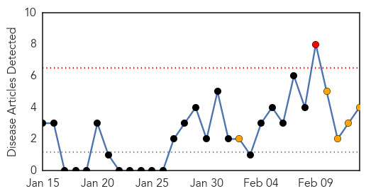

Dengue Fever
30-Day Web Trend
1 alerts, 5 warnings

30-Day Twitter Trend
0 alerts, 0 warnings

Article Locations

Article Confidences

Top Articles:
Top Tweets:
-
No tweets found for Feb 13, 2014
Measles
30-Day Web Trend
0 alerts, 0 warnings

30-Day Twitter Trend
0 alerts, 0 warnings

Article Locations

Article Confidences

Top Articles:
- 0.902
- Measles cases on the rise, 3 dead
- 0.882
- Doctors Without Borders to Vaccinate 400,000 Children Against Measles in Guinea - Guinea
- 0.845
- Seven kids die on measles outbreak in Vietnam - Xinhua
- 0.827
- BART Riders Warned About Measles Infection From Contagious Passenger « CBS San Francisco
- 0.820
- BART rider with measles potentially exposed thousands
- 0.820
- BART rider with measles potentially exposed thousands
- 0.797
- U.S. Opens Global Health Security Summit
- 0.778
- Health officials: Student infected with measles may have spread illness on BART, UC Berkeley campus
- 0.742
- Health officials warn public about possible exposure to measles
- 0.740
- Measles Warning After Infected UC Berkeley Student Rides BART: Health Officials
- 0.607
- California commuters warned: You might have the measles
- 0.599
- Officials warn of possible measles exposure on BART trains
Top Tweets:
-
No tweets found for Feb 13, 2014